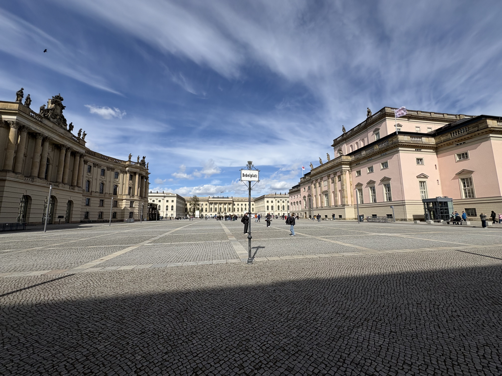
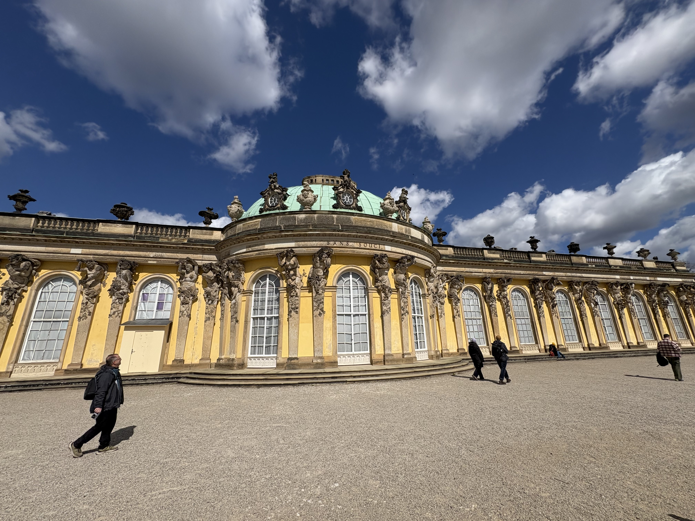
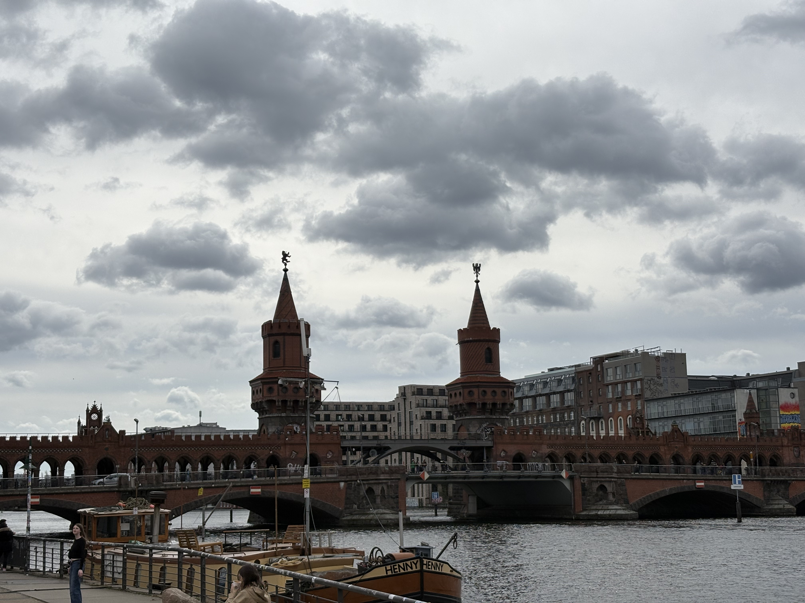
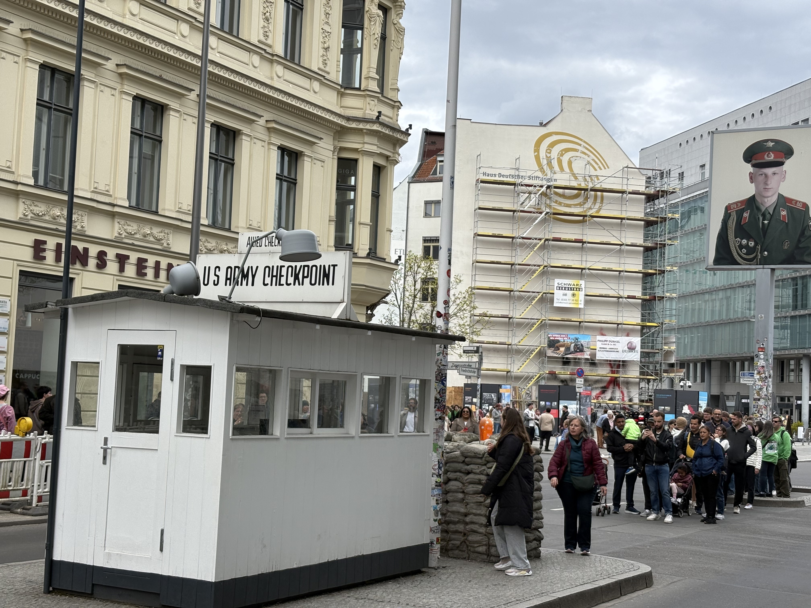

"Berlin doesn't greet you. It waits for you to figure it out. And when you do — it's unlike anywhere else on earth."
The City That Makes You Work For It
Berlin doesn't ease you in. It demands something of you from the first hour: attention, patience, and a willingness to sit with discomfort. I arrived at 11 PM knowing only one thing — my hostel was on Schwedter Straße in Prenzlauer Berg — and navigated the rest by instinct: wrong tram platforms, missed stops, cobblestone streets that all looked identical in the dark.
By the time I reached East Seven Hostel, dragging my bag through Prenzlauer Berg's quiet residential lanes, the city had already made its first impression. Berlin felt neither welcoming nor hostile; it simply existed — indifferent, vast, waiting for you to catch up. I would spend the next three days doing exactly that. Berlin, I quickly learned, rewards patience and punishes expectations in equal measure.
Where History Hits Like a Freight Train
Built in 1791 as a symbol of Prussian peace, Brandenburg Gate spent most of its history as anything but: it witnessed Napoleon's triumphal march, Nazi torchlit rallies, and 28 years as the most charged checkpoint in a divided city. Standing in Pariser Platz and looking up at those twelve Doric columns, you feel the accumulated weight of all of it — not as a history lesson but as something physical, atmospheric, almost gravitational.
No photograph captures what it is actually like to walk through. I crossed slowly, deliberately, thinking about all the people who once stood at this gate and couldn't.

Five minutes south stands the Memorial to the Murdered Jews of Europe: 2,711 concrete stelae arranged across an undulating field, each a different height, the ground deliberately uneven beneath your feet. There are no explanatory plaques among the blocks, no audio guide telling you how to feel; the design does all of that work itself. The columns close around you as you walk deeper in, the city disappearing, the silence thickening.
I went underground to the information centre and stayed far longer than planned. Some places demand that.
Bebelplatz: The Empty Library
Unter den Linden — Berlin's grand baroque boulevard, lined with linden trees and embassies — stretches east from the Gate toward Museum Island in a long, ceremonial corridor. Walking it, I stopped at Bebelplatz, a pale cobblestone square in front of the old Humboldt University, and crouched to peer through a small glass panel set flush into the ground.
Below it: an underground room lined floor-to-ceiling with empty white bookshelves. This is Micha Ullman's The Empty Library — a permanent memorial to the night of 10 May 1933, when Nazi students burned between 20,000 and 25,000 books in this square. The shelves hold precisely enough space for every volume that was lost; nothing else fills them. It is one of the most quietly devastating things I have ever seen, and it costs nothing to visit.

Museum Island & an Evening in Mitte
Museum Island — the UNESCO World Heritage site that clusters five of Berlin's greatest museums on a narrow peninsula in the Spree — announced itself with the green copper dome of the Berliner Dom rising above the river and the gleaming white facade of the reconstructed Humboldt Forum beside it. After a morning of war memorials and book burnings, the sight was almost overwhelming; I sat on the riverbank for twenty minutes and simply watched the city.

That evening, Hackesche Höfe revealed a different Berlin entirely: eight interconnected art nouveau courtyards, built in 1906 and now filled with independent galleries, bars, and restaurants whose fairy lights strung across ornate tiled facades. The city at night is warmer, looser, more itself; navigating the Tram M1 back to Prenzlauer Berg feeling like I knew what I was doing was, I'll admit, a minor triumph.
The Wall, The Weight & The Rain
If Day 1 belonged to grand boulevards and memorial silences, Day 2 was about the scar itself.
The East Side Gallery preserves 1.3 kilometres of the Berlin Wall along the Spree — the longest remaining section, transformed in 1990 into the world's largest open-air gallery by 118 artists from 21 countries. Walk its full length; don't rush it. The most famous work is Dmitri Vrubel's Brotherly Kiss — Brezhnev and Honecker locked in a surreal socialist embrace, painted directly onto the concrete that once divided a continent. It is simultaneously absurd, political, historically precise, and darkly funny; no other city produces art quite like this.

At Oberbaumbrücke, I stopped and turned back to look. The bridge is extraordinary in its own right: red brick, twin neo-Gothic towers, built in 1896 to connect what would later become East and West Berlin — and now reuniting them daily as yellow U-Bahn trains cross its upper deck. The East Side Gallery murals stretched back in one direction; the towers of the modern city rose in every other. It's the kind of scene you photograph while knowing immediately that the picture won't do it justice.
Checkpoint Charlie — the former Allied crossing point between East and West Berlin — is unabashedly touristy; actors in period uniform charge for photographs, and souvenir shops crowd every corner. Don't let that put you off. Standing at the exact spot where, in October 1961, Soviet and American tanks faced each other barrel-to-barrel for sixteen hours, where over a hundred people died attempting to cross a painted line on asphalt — the historical weight cuts through the kitsch without difficulty.
Topography of Terror
The Topography of Terror stands on the excavated foundations of the former Gestapo and SS headquarters — an open wound in the city's geography, deliberately left unbuilt. The free museum documents the rise of Nazi terror through meticulously presented archival material: photographs, documents, first-hand testimonies. I took the full audio tour, read every outdoor panel, and stood beside the preserved stretch of Berlin Wall that runs along the building's perimeter, trying to comprehend what decisions were made in the soil beneath my feet.
Then it started raining — heavy, cold, relentless Berlin rain — and I stayed inside even longer. Some education is uncomfortable; the most necessary kind usually is.

When I finally emerged, the rain had softened to a drizzle; I made my way to Potsdamer Platz, which was, as recently as 1990, nothing but death-strip wasteland. Today it is a gleaming corporate district of glass towers — an almost jarring contrast to the morning's museums. At the Sony Center, beneath its spectacular tensile roof, I noticed a double line of cobblestones embedded in the plaza: the exact path of the Berlin Wall, now crossed daily by tourists who don't look down. History, literally underfoot.
That evening I tried Berliner Weiße — the capital's own sour wheat beer, traditionally served with a shot of raspberry syrup to cut the tartness. It is strange, refreshing, and unlike anything else you'll drink in Germany; rather like Berlin itself.
Frederick the Great & The Dutch Quarter
My final morning began at the Ampelmann Shop at Hackescher Markt — a store dedicated entirely to East Germany's beloved pedestrian crossing figure, the little hat-wearing Ampelmann that Berliners campaigned fiercely to preserve after reunification. I picked up a tote bag and a few keychains: lightweight, distinctly Berlin, the kind of souvenir that actually means something.
Don't skip the DDR Museum on Museum Island; it is one of the most thoughtfully designed interactive exhibitions I have encountered anywhere. The museum reconstructs everyday East German life through hands-on displays that are simultaneously irreverent and devastating: I sat in an actual Trabant, rummaged through the drawers of a fully furnished East German apartment — toothbrushes, ration books, propaganda posters filed alongside family photographs — and drove a Trabant simulation through the grey streets of 1980s East Berlin. It contextualises everything else you've seen in the city in a way nothing else does.
Sanssouci: Frederick the Great's Garden
The S7 train reaches Potsdam in 40 minutes from central Berlin; take it. Sanssouci Palace — built by Frederick the Great between 1745 and 1747, its French name translating simply as "without worries" — sits atop terraced vineyards at the edge of a vast royal park and is, without hyperbole, among the most beautiful buildings in Europe. Frederick designed it himself as a summer retreat scaled for pleasure rather than power; the result is something intimate and luminous that no photograph fully prepares you for.

His grave is on the upper terrace: a simple flat stone bearing only his name, typically surrounded by small potatoes left by visitors — a tribute to Frederick's famous campaign to popularise the crop in Prussia by planting it under armed guard and then ordering the guards to look away. People stole the potatoes; demand was created. There is something quietly moving about a king who built all of this and asked simply to be buried in it.
The Dutch Quarter — four compact blocks of red-brick, Dutch-style townhouses commissioned in the 1730s to attract skilled craftsmen from the Netherlands — is one of Potsdam's most charming surprises; narrow lanes, gabled facades, and independent cafés that reward an afternoon of aimless wandering. On the walk back to the station, I found a shop selling authenticated fragments of the Berlin Wall, each with a certificate of provenance. I bought a piece: grey concrete on one side, a sliver of old paint on the other — one fragment of a divided world, small enough to carry home.

What Berlin Taught Me
Berlin is not a comfortable city — and it has no interest in becoming one. Where most European capitals spend their energy projecting beauty, elegance, or cultural prestige, Berlin directs its energy toward honesty: about what happened here, what was built here, what was destroyed here, and what was rebuilt. It places memorials at the centre of its busiest intersections; it builds galleries on the walls that once divided it; it turns its most painful history into its most essential art.
By the end of three days, I had found my way around trams, U-Bahns, and S-Bahns; I had asked strangers for directions and received help every single time; I had stood in places that altered the course of the twentieth century. Berlin will not offer itself easily — but give it your full attention, and it gives back something that very few cities can: the feeling that you have genuinely understood something about the world.
"Berlin doesn't offer itself easily. But once it does — it stays with you forever."
 📍 Humboldt University
📍 Humboldt University 📍 Berliner Dom
📍 Berliner Dom
📍 Oberbaumbrücke
📍 Checkpoint Charlie 📍 Mitte, Berlin
📍 Mitte, Berlin 📍 Room of Silence · Akademie der Künste
📍 Room of Silence · Akademie der Künste 📍 Potsdam City Palace
📍 Potsdam City Palace 📍 St. Peter & Paul Church
📍 St. Peter & Paul Church 📍 Dutch Quarter, Potsdam
📍 Dutch Quarter, PotsdamEXPEDITION 001 — BERLIN & POTSDAM
Did this story move you?
Field Notes
— LEAVE A MESSAGE FROM THE ROAD —